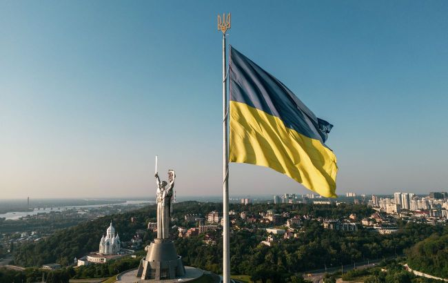

Dmytro Ivanytskyi
About Me
This is a brief bio. I am a student in the Dynamic Web Fundamentals course, learning about HTML, CSS, and JavaScript. I am interested in building functional and beautiful websites.

Ukraine

Ukraine is a large country in Eastern Europe known for its fertile black soil, which makes it a 'breadbasket' for the world. It has a rich history, vibrant culture, and beautiful landscapes, from the Carpathian Mountains to the Black Sea coast.